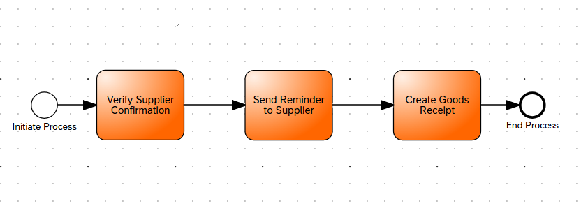
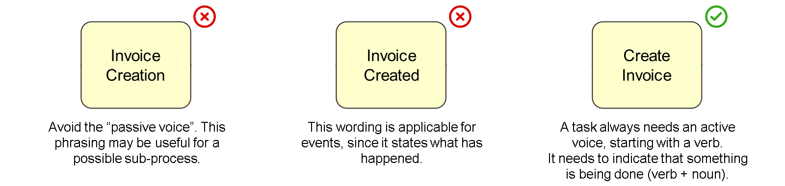
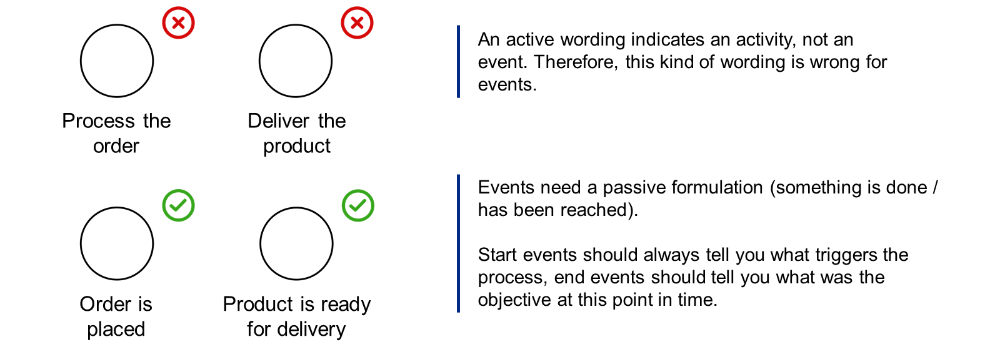
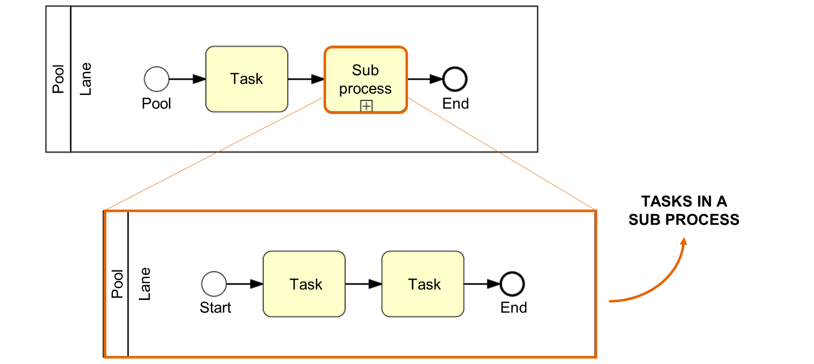
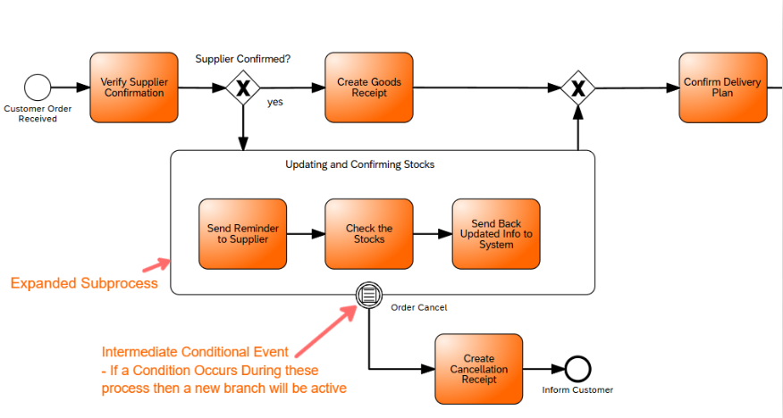

Task in BPMN
Tasks represent atomic units of work in a process. Keep tasks focused on a single responsibility.
- Use verb-noun pairs for clarity (e.g., "Approve Invoice").
- Limit scope — one logical action per task.
- Document inputs, outputs, and responsible roles.
Task Examples

Naming Convention
BPMN Naming Guidelines


Collapsed Processes
When to Use Collapsed Processes
Collapsed processes (also called Sub-processes) are used to encapsulate related activities into a single, manageable unit.

Example: A collapsed process containing Different Process
Benefits & Best Practices
- Reduces visual complexity
- Improves maintainability
- Enables process reuse
- Better process organization
- Use meaningful names
- Keep related activities together
- Document boundaries
- Consider detail level needed
Expanded Processes
What is an Expanded Process?
An expanded process shows all the details of a subprocess directly within the main process diagram. It's useful when you want to display the internal workflow without having to navigate to a separate diagram.
This approach provides immediate visibility into subprocess activities, making it easier to understand the overall process flow at a glance.
When to Use Expanded Process
- When immediate visibility of subprocess details is important
- For relatively simple subprocesses that don't overwhelm the main diagram
- Also Triggering Other Flows If Certain Conditions are Met During a Subprocess Stage

Example: An expanded process showing internal workflow details